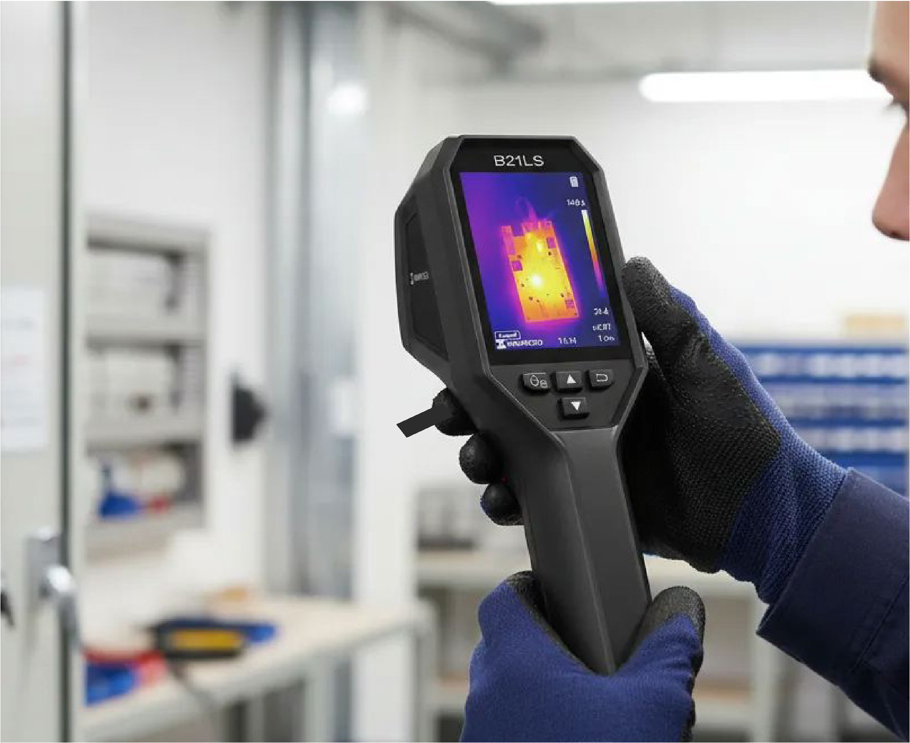

Fugadetec
Precisión en fugasDetección precisa de fugas de agua en todo tipo de cañerías
utilizamos detector de fugas por ultrasonido. gas trazador h2 de alta precisión, cámara termográfica de alto rango de teperatura y escaneo de radar de banda ultraancha (UWB) para localizar con precisión la línea afectada, reducir daño innecesario y facilitar una reparación más eficiente.

www.fugadetec.cl
contacto@fugadetec.cl
Detección de Fugas
Tecnologías aplicadas a la detección de fugas.
Arquitectura
Esta sección mostrará referencias visuales, proyectos y material gráfico asociado a la línea de arquitectura.
Construcción
Esta sección mostrará fotografías de obra, ejecución y trabajos vinculados a la línea de construcción.
¿Necesitas una evaluación?
Esta sección quedará como base de contacto principal. Más adelante podrás ampliar esta parte con formulario, WhatsApp y nuevas redes sociales.
contacto@fugadetec.cl
juanpablo@fugadetec.cl
johans@fugadetec.cl